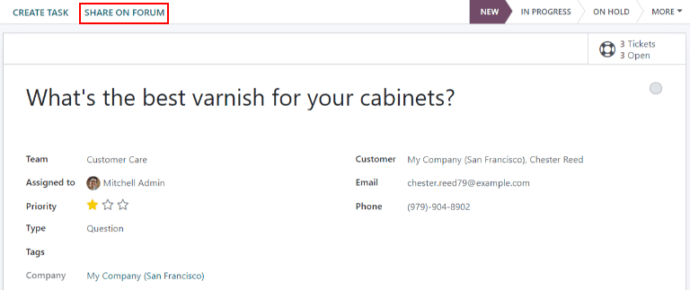

Help center¶
Odoo Helpdesk integrates with the Forum, eLearning, and Knowledge apps to create the help center.
The help center is a centralized location where teams and customers can search for and share detailed information about products and services.
Note
In order to activate any of these features on a Helpdesk team, (Forums, eLearning, or Knowledge), the Visibility of the team has to be set to Invited portal users and all internal users. See Getting Started for more information on Helpdesk team settings and configuration.
Warning
Since all of the help center features require integration with other applications, enabling any of them may result in the installation of additional modules or applications.
Installing a new application on a One-App-Free database will trigger a 15-day trial. At the end of the trial, if a paid subscription has not been added to the database, it will no longer be active or accessible.
Knowledge¶
Odoo’s Knowledge application is a collaborative library where users can store, edit, and share information. The Knowledge app is represented throughout the database by a book icon.
Enable Knowledge on a Helpdesk team¶
To enable the Knowledge feature on a Helpdesk team, go to and select a team, or create a new one.
When a team has been selected or created, Odoo displays that team’s detail form.
On the team’s detail form, scroll down to the Self-Service section. Click the box next to Knowledge to activate the Knowledge feature. When clicked, a new field labeled Article appears.
Clicking the Article field reveals a drop-down menu. At first, there is only one option in the drop-down menu titled Help, which Odoo provides by default. Select Help from the drop-down menu to choose this article.
Tip
To create a new article, go to the , then hover the cursor next to the Workspace section heading, located in the left sidebar. Moving the cursor there reveals a hidden ➕ (plus sign) icon.
Click the ➕ (plus sign) to create a new article in the Workspace. In the upper right corner of the page, click the Share button, and slide the Share to Web toggle switch until it reads Article Published. It can then be added to a Helpdesk team.
Once an article has been created and assigned to a Helpdesk team, content can be added and organized through the Knowledge app.
See also
Search articles from a Helpdesk ticket¶
When members of a Helpdesk team are trying to solve a ticket, they can search through the content in the Knowledge app for more information on the issue.
To search Knowledge articles, open a ticket — either from the Helpdesk app dashboard, or by going to , and selecting a Ticket from the list.
When a Ticket is selected, Odoo reveals that ticket’s detail form.
Click the Knowledge (book) icon, located above the chatter to open a search window.
Tip
Knowledge articles can also be searched by pressing Ctrl + K to open the command palette, then typing ?, followed by the name of the desired article.
When Odoo reveals the desired article, click it, or highlight the Article title, and press Enter. This will open the article in the Knowledge application.
To open the article in a new tab, press Ctrl + Enter.
Tip
If a more in-depth search is required, press Alt + B. That will reveal a separate page, in which a more detailed search can occur.
Solve tickets with templates¶
Template boxes can be added to Knowledge articles to allow content to be reused, copied, sent as messages, or added to the description on a ticket. This allows teams to maintain consistency when answering customer tickets, and minimize the amount of time spent on responding to repeat questions.
Add templates to articles¶
To create a template, go to . Click on an existing nested article or create a new one by clicking the ➕ (plus sign) icon next to Help.
Type / to open the Powerbox and view a list of commands. Select or type template. A gray template
block will be added to the page. Add any necessary content to this block.
Note
Templates will only display the Use as description or Send as Message options if they are accessed directly from Helpdesk.
Use templates in tickets¶
Templates can be used to respond directly to a Helpdesk ticket as a message, or to add information to the ticket’s description.
To use templates in a Helpdesk ticket, first, open a ticket, either from the Helpdesk dashboard or by going to and selecting a Ticket from the list.
Click on the Knowledge (book) icon above the chatter for the ticket. This opens a search window. In this search window, select, or search for the desired article. Doing so reveals that article page in the Odoo Knowledge application.
To use a template to respond to a ticket, click Send as message in the upper right corner of the template box, located in the body of the article.
Doing so opens a Compose email pop-up window. In this window, select the recipients, make any necessary additions or edits to the template, then click Send.
Tip
To use a template to add information to a ticket’s description, click Use as description in the upper right corner of the template box, located in the body of the article. Doing so will not replace the existing text in a ticket’s description. The template will be added as additional text.
Community Forum¶
A Community Forum provides a space for customers to answer each other’s questions and share information. By integrating a forum with a Helpdesk team, tickets submitted by customers can be converted to posts and shared.
Enable forums on a Helpdesk team¶
To enable Community Forums on a Helpdesk team, start by navigating to and select a team, or create a new one.
Selecting or creating a team reveals that team’s detail form. Scroll down to the Self-Service section of features, and enable Community Forum, by checking the box beside it.
When activated, a new field labeled Forums appears beneath.
Click the empty Forums field to reveal a drop-down menu. By default, there is only one option to begin with, labeled Help. That is the option Odoo automatically created when the Community Forums feature was enabled. Select Help from the drop-down menu to enable that forum.
To create a new forum, type a name into the blank Forums field, then click the Create and Edit option. Multiple forums can be selected in this field.
See also
Check out the Forum documentation to learn how to configure, use, and moderate a forum.
Create a forum post from a Helpdesk ticket¶
When a Helpdesk team has a Forum enabled, tickets submitted to that team can be converted to forum posts.
To do that, select a ticket, either from a team’s pipeline or from in the Helpdesk application.
At the top of the ticket detail form, click the Share on Forum button.
When clicked, a pop-up appears. Here, the post and title can be edited to correct any typos, or modified to remove any proprietary or client information. Tags can also be added to help organize the post in the forum, making it easier for users to locate during a search. When all adjustments have been made, click Create and View Post.
eLearning¶
Odoo eLearning courses offer customers additional training and content in the form of videos, presentations, and certifications/quizzes. Providing additional training enables customers to work through issues and find solutions on their own. They can also develop a deeper understanding of the services and products they are using.
Enable eLearning courses on a Helpdesk team¶
To enable eLearning courses on a Helpdesk team, go to and select a team, or create a new one.
On the team’s settings page, scroll to the Self-Service section, and check the box next to eLearning. A new field will appear below, labeled Courses.
Click the empty field next to Courses beneath the eLearning feature to reveal a drop-down menu. Select an available course from the drop-down menu, or type a title into the field, and click Create and edit to create a new course from this page. Multiple courses can be assigned to a single team.
Create an eLearning course¶
A new eLearning course can be created from the Helpdesk team’s settings page, as in the step above, or from the eLearning app.
To create a course directly through the eLearning application, navigate to . This reveals a blank course template that can be customized and modified as needed.
On the course template page, add a Course Title, and below that, Tags.
Click on the Options tab. Under Access Rights, choose the Enroll Policy. This determines which users will be allowed to take the course. Under Display, choose the course Type and Visibility. The Visibility setting determines whether the course will be available to public site visitors or members.
Add content to an eLearning course¶
To add content to a course, click the Content tab and select Add Content. Choose the Content Type from the drop-down menu and upload the file, or paste the link, where instructed. Click Save when finished. Click Add Section to organize the course in sections.

Note
In order to add a certification to a course, go to , check the box labeled Certifications, and Save to activate the setting.
See also
Publish an eLearning course¶
To allow customers to enroll in a course, both the course and the contents need to be published.
If the course is published, but the contents of the course are not published, customers can enroll in the course on the website, but they won’t be able to view any of the course content. Knowing this, it may be beneficial to publish the course first if the course contents are intended to be released over time, such as classes with a weekly schedule.
To make the entire course available at once, each piece of course content must be published first, then the course can be published.
To publish a course, choose a course from the eLearning dashboard. On the course template page, click the Go to Website smart button.
This will reveal the front end of the course’s web page. At the top of the course web page, move the Unpublished toggle switch to Published.
Publish eLearning course contents from the back-end¶
To publish eLearning course content from the back-end, choose a course from the eLearning dashboard. On the course template page, click the Published Contents smart button.
Doing so reveals a separate page displaying all the published content related to that course. Remove the default Published filter from the search bar in the upper-right corner, to reveal all the content related to the course - even the non-published content.
Click the ≣ (List View) icon in the upper-right corner, directly beneath the search bar to switch to list view.
While in List View, there is a checkbox on the far left of the screen, above the listed courses, to the left of the Title column. When that checkbox is clicked, all the course contents are selected at once.
With all the course content selected, double click any of the boxes in the Is Published column. This reveals a pop-up window, asking for confirmation that all selected records are intended to be published. Click OK to automatically publish all course content.